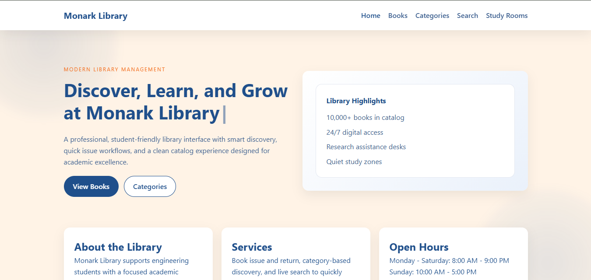
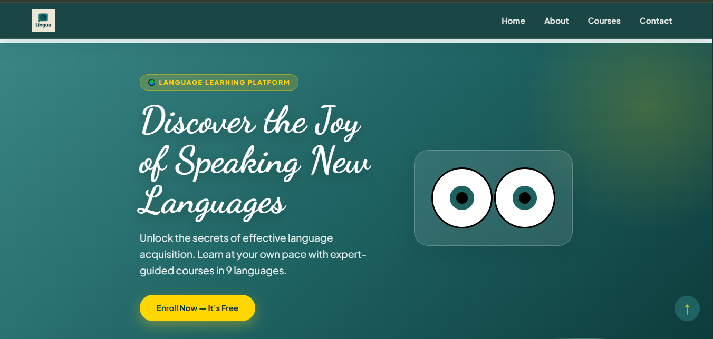
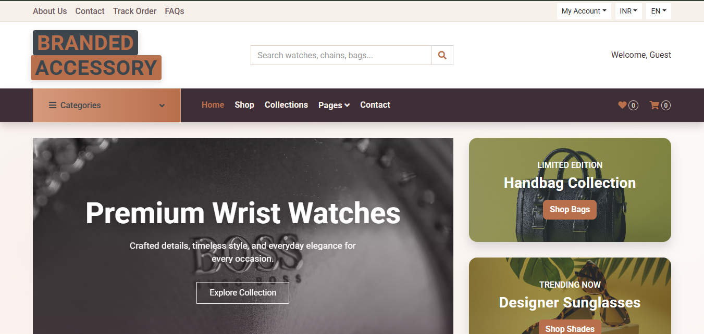
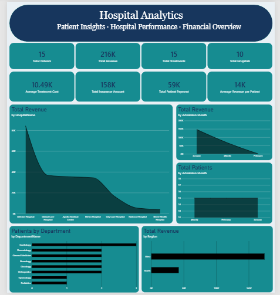
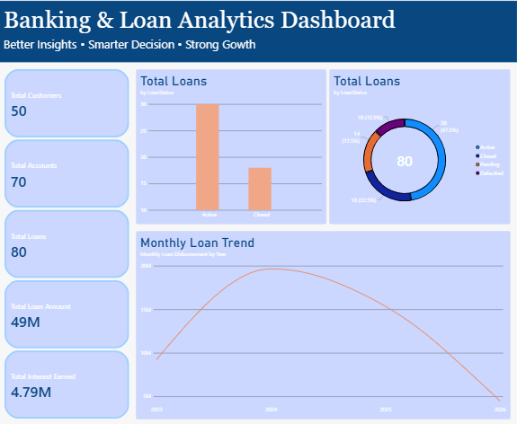

Data Analytics
- Microsoft ExcelIntermediate
- SQLBasic
- Power BI
- Data Cleaning
- Data Transformation
- Data Visualization
- KPI Analysis
Computer Engineering student
I enjoy building websites and learning how technology can solve practical problems. I am currently strengthening my skills in Python, SQL, Excel, Power BI, and Data Analytics.
A little about me
I am a Computer Engineering student from Ahmedabad, Gujarat, India. I am developing my skills in Data Analytics through coursework, practice, and personal projects.
I am building a strong foundation in data analytics through projects focused on data cleaning, analysis, visualization, and turning insights into clear, useful decisions.I am still learning, and this portfolio shows some of the work and areas I am exploring.
What I am working with
Selected work



Web project
An e-commerce concept for accessories with product categories, search, shopping cart, wishlist, and responsive pages.
Turning Raw Data into Meaningful Business Insights
Practical data analytics projects involving data cleaning, Excel reporting, Power BI dashboards, KPI analysis and business insights.
Excel analysis
Analysed mobile shop sales data using Excel functions, VLOOKUP, SUMIF, SUMIFS, COUNTIF, Pivot Tables, charts and data cleaning techniques. Explored product-wise sales, department performance and employee-related metrics.

Healthcare analytics
Developed a hospital analytics dashboard to analyse patient demographics, hospital performance, doctor performance, department activities and financial metrics. Performed data cleaning and transformation using Power Query and created KPI measures using DAX.

Banking analytics
Created an interactive banking analytics dashboard to analyse loan distribution, active and closed loans, customer loan amounts, branch performance, interest earned and financial KPIs.
Education
Monark University
2025 - 2028 (Expected) · Ahmedabad, Gujarat, IndiaWork experience
Development Department
Where I am right now
I'm continuously strengthening my technical foundation in Computer Engineering, with a focus on Data Analytics. I'm developing my skills through structured learning, hands-on practice and practical projects.
Resume
Computer Engineering Undergraduate
Ahmedabad, Gujarat, India · djsolanki899@gmail.com
Computer Engineering undergraduate with a foundation in software development and practical exposure to data analysis through academic and self-directed projects. Familiar with using Excel and Power BI for data cleaning, transformation, KPI analysis and visual reporting. Has basic SQL knowledge and is currently learning Python with Pandas and NumPy. Completed a software engineering internship involving ERP HR workflows and business processes.
Hasmukh Goswami College of Engineering, Monark University
Banking Loan Analysis Dashboard — Power BI, Power Query, DAX, Excel
Hospital Analysis Dashboard — Power BI, Power Query, DAX, Excel
Mobile Shop Data Analysis — Microsoft Excel
Microsoft Excel: Intermediate
Power BI: Dashboard creation, Power Query, foundational DAX
SQL: Basic
Python: Learning Pandas and NumPy
Data Analysis: Data cleaning, transformation, KPI analysis and visualization
Advanced Full Stack Development Certificate — Patel Web Solution
Contact
I am happy to connect through the links below.